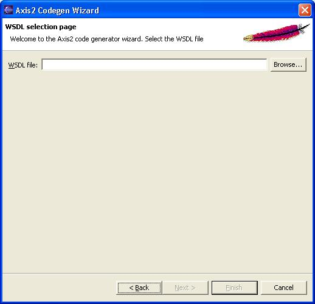

The Axis2 code generator comes built-in with an Eclipse plug-in. This document explains the installation and usage of the Axis2 code generator plug-in.
The easiest way to obtain the plug-in would be the binary distribution. The full Axis binary distribution contains the compiled version of this plug-in under the tools directory.
If one needs to build the plugin from source it is not as trivial as running the Maven build. The reason is that the plug-in depends heavily on the Eclipse classes, which are only available in an Eclipse environment. The recommended procedure is to run the create-project.xml (in the "modules\tool" directory of the source distribution) build file which will create two folders (the other one for the Service Archiver tool) and copy the necessary files to relevant folders. Then Eclipse should be configured to open the contents in a PDE project. Please go through the Eclipse documentation to learn how to open projects in the PDE format.
Once you've obtained the plug-in just unzip the content of the plug-in archive to the eclipse plug-in directory (if it is the zipped-binary version) or copy the necessary folders to the eclipse plug-in directory and restart Eclipse.
Note - This plug-in works on Eclipse version 3.0 and upwards
If the plug-in is properly installed you should see a new wizard under the "New" section.(use the File -> New -> Other or Ctrl + N )
Selecting the wizard and pressing the next button will start the code generator wizard. Following is the first wizard page.

Selecting the generate code from WSDL option leads to the next page. Note that the Java-to-WSDL tool is disabled.

To move on to the next page the WSDL file location must be given. The browse button can be used to easily browse for a file rather than typing the whole path.
Once the WSDL file is selected, codegen options are to be selected. By far this is the most important page in this wizard, which determines the characteristics of the code being generated. Novices need not worry about these options since the most common options are defaulted, But advanced users will find it very easy to "turn the knobs" using these options.

Once the options are taken care of, only the final step of the code generation is left. it is the selection of the output file location.

When the output file location is selected, the Finish button will be enabled. Pressing the finish button will generate the code and a message box will pop up acknowledging the success. Well Done! Now you are ready for Axis2 Code generation.
Just as old times there will be users who wish to use the command line version of the tool. This basic tool is implemented by the WSDL2Code class and just for the convenience in the java case (which would be the majority) there is another WSDL2Java class. One can choose to run the main classes directly or use one of the scripts to run the WSDL2Code and WSDL2Java appropriately. (the scripts are found in the bin directory of the binary distribution)
| -uri <Location of WSDL> | WSDL file location. This should point to a WSDL file in the local file system |
| -o <output Location> : | output file location. This is where the files would be copied once the code generation is done. If this option is omitted the generated files would be copied to the working directory. |
| -l <language> | Output language. Currently the code generator can
generate code in Java and CSharp. (CSharp support is limited) When
omitted defaults to Java.
Allowed options are
|
| -p <package name> | The target package name. If omitted, a default package (formed using the target namespace of the WSDL) will be used. |
| -a | Generate code only for async style . when this option is used the generated stubs will have only the asynchronous invocation methods. Switched off by default. |
| -s | Generate code only for sync style . When this option is used the generated stubs will have only the synchronous invocation methods. Switched off by default. When used with the -a option, this takes precedence. |
| -t | Generates a test case. In the case of Java it would be a junit test case. This test case will generate a dummy implementation of the service and a relevant service.xml and will deploy this particular service in a SimpleHttpServer. Then looking at the WSDL it will generate test methods that will do web service invocation both synchronously and asynchronously and test the deployed service. |
| -ss | Generates server side code (i.e. skeletons). Default is off |
| -sd | Generates the service descriptor (i.e. server.xml). Default is off. only valid with -ss |
The code generator also comes bundled with an Ant task. The ant task is implemented by the org.apache.axis2.tool.ant.AntCodegenTask class. Following are the ant task attributes.
| wsdlfilename | WSDL file location. Maps to the uri option of the command line tool |
| output | output file location. This is where the files would be copied once the code generation is done. If this option is omitted the generated files would be copied to the working directory. . Maps to the -o option of the command line tool |
| language | Output language. Currently the code
generator can generate code in Java and CSharp. (CSharp support is
limited) When omitted defaults to Java.
Allowed options are
Maps to the -l option of the command line tool |
| packagename | The target package name. If omitted, a default package (formed using the target namespace of the WSDL) will be used. Maps to the -p option of the command line tool. |
| asynconly | Generate code only for async style . when this option is used the generated stubs will have only the asynchronous invocation methods. Defaults to false if omitted Only true and false are applicable as values. Maps to the -a option of the command line tool. |
| testcase | Generates a test case |
| synconly | Generate code only for sync style . when this option is used the generated stubs will have only the synchronous invocation methods. Defaults to false if omitted. Only true and false are applicable as values. Maps to the -s option of the command line tool. |
| serverside | Generates server side code (i.e. skeletons). Only true and false are applicable as values. Default is false. Maps to the -ss option of the command line tool |
| generateserverxml | Generates server side code (i.e. skeletons). Only true and false are applicable as values. Default is false. Maps to the -sd option of the command line tool. |
Following is an example ant build file that uses the custom Ant task.
<?xml version="1.0"?> <project name="CodegenExample" default="main" basedir="."> <target name="declare" > <taskdef name="codegen" classname="org.apache.axis2.tool.ant.AntCodegenTask" classpath="classes"/> </target> <target name="main" depends="declare"> <codegen wsdlfilename="C:\test\wsdl\CombinedService.wsdl" output="C:\" serverside="true" generateserverxml="true" /> </target> </project>
Notice the main target that uses the "codegen" task which will use the org.apache.axis2.tool.ant.AntCodegenTask class and run the code generation tool internally while passing the relevant arguments and do the proper generation. If a user types
>ant or >ant main
it will generate the serverside code and service.xml for the given WSDL file(C:\test\wsdl\CombinedService.wsdl) and the generated code will be written to C:\ directory.
For this Ant task to work the following jars need to be in the class path.
Since the users may find altering their ant class path a bit daunting they can also follow an easier technique. The code generator main class can be invoked directly through the build file.
Below is an example of a full build.xml needed to run WSDL2Java and generate the Java source files, compile the sources, and build an AAR file ready for deployment:
<!DOCTYPE project>
<project name="wsdl2java-example" default="usage" basedir=".">
<property name="project-name" value="wsdl2java-example"/>
<property file="build.properties"/>
<property name="build" value="build"/>
<property name="src" value="src"/>
<property name="build.classes" value="build/classes" />
<path id="axis.classpath">
<pathelement location="build/classes" />
<fileset dir="${axis.home}/lib">
<include name="**/*.jar" />
</fileset>
<pathelement location="${build.classes}" />
</path>
<target name="usage" description="Build file usage info (default task)">
<echo message=" " />
<echo message="${project-name} " />
<echo message="-------------------------------------------------------" />
<echo message=" " />
<echo message="Available Targets:" />
<echo message=" " />
<echo message=" Compiling:" />
<echo message=" compile - Compiles the WSDL2Java source code" />
<echo message=" " />
<echo message=" Compiling client:" />
<echo message=" compile_client - Compiles the client source code" />
<echo message=" " />
<echo message=" Cleaning up:" />
<echo message=" clean - Delete class files" />
<echo message=" " />
<echo message=" WSDL:" />
<echo message=" wsdl2java - Generate source from WSDL" />
<echo message=" " />
<echo message=" AAR:" />
<echo message=" aar - Generate an .aar for deployment into WEB-INF/services" />
<echo message=" " />
<echo message=" Executing:" />
<echo message=" runLogin - Execute the runLogin client" />
</target>
<target name="prepare" >
<mkdir dir="${build.classes}" />
</target>
<target name="clean" >
<delete dir="${build}" />
<delete dir="${dist}" />
</target>
<target name="compile">
<echo message="Compiling wsdl2 files"/>
<javac
srcdir="output"
destdir="${build.classes}"
deprecation="true"
failonerror="true" debug="true"
>
<classpath refid="axis.classpath"/>
</javac>
</target>
<target name="wsdl2java" depends="clean,prepare">
<delete dir="output" />
<java classname="org.apache.axis2.wsdl.WSDL2Java" fork="true">
<classpath refid="axis.classpath"/>
<arg value="-uri"/>
<arg file="wsdl/LoginEndpoint.wsdl"/>
<arg value="-ss"/>
<arg value="-sd"/>
<arg value="-o"/>
<arg file="output"/>
<arg value="-p"/>
<arg value="org.example.types"/>
</java>
<!-- Move the schema folder to classpath-->
<move todir="${build.classes}">
<fileset dir="output">
<include name="**/*schema*/**/*.class"/>
<include name="**/*schema*/**/*.xsb"/>
</fileset>
</move>
</target>
<target name="jar_wsdl" depends="compile">
<jar jarfile="lib/axis2_example_wsdl.jar" >
<fileset dir="${build}/classes" />
</jar>
</target>
<!-- build an .aar file for axis2 web services -->
<target name="aar" depends="compile">
<delete dir="${build.classes}/META-INF" />
<mkdir dir="${build.classes}/META-INF" />
<copy todir="${build.classes}/META-INF" >
<fileset dir="output/service_descriptors/LoginEndpoint" >
<!-- axis2 web services definitions file -->
<include name="services.xml"/>
</fileset>
<fileset dir="wsdl" >
<include name="LoginEndpoint.wsdl"/>
</fileset>
</copy>
<jar jarfile="dist/LoginEndpoint.aar" >
<fileset dir="${build.classes}" />
</jar>
</target>
<target name="compile_client">
<echo message="Compiling client files"/>
<javac
srcdir="src"
destdir="${build.classes}"
deprecation="true"
failonerror="true" debug="true"
>
<classpath refid="axis.classpath"/>
</javac>
</target>
<target name="runLogin" depends="compile_client" description="run webLogin client">
<echo message="running the webLogin client" />
<java classname="org.client.LoginClient" >
<classpath refid="axis.classpath"/>
</java>
</target>
</project>
The above build.xml depends on a build.properties file which defines 'axis.home', such as:
axis.home=/home/username/axis2-0.93-bin/
The above build.xml example also assumes three empty directories exist, 'dist', 'lib', and 'src'.
Below is a validated WSDL Document following the Document/Literal Style. The name of this file matches the name used in the WSDL2Java ant task above, LoginEndpoint.wsdl
<?xml version="1.0" encoding="UTF-8"?>
<definitions name="LoginService" targetNamespace="http://login" xmlns:tns="http://login" xmlns="http://schemas.xmlsoap.org/wsdl/" xmlns:xsd="http://www.w3.org/2001/XMLSchema" xmlns:soap="http://schemas.xmlsoap.org/wsdl/soap/" xmlns:ns2="http://login/types">
<types>
<schema targetNamespace="http://login/types" xmlns:tns="http://login/types" xmlns:soap11-enc="http://schemas.xmlsoap.org/soap/encoding/" xmlns:xsi="http://www.w3.org/2001/XMLSchema-instance" xmlns:wsdl="http://schemas.xmlsoap.org/wsdl/" xmlns="http://www.w3.org/2001/XMLSchema">
<import namespace="http://schemas.xmlsoap.org/soap/encoding/"/>
<element name="returnWebLoginElement">
<complexType>
<sequence>
<element ref="tns:soap_session_idElement"/>
<element ref="tns:web_user_nameElement"/>
</sequence>
</complexType>
</element>
<element name="webLoginElement">
<complexType>
<sequence>
<element ref="tns:user_nameElement"/>
<element ref="tns:user_passwordElement"/>
</sequence>
</complexType>
</element>
<element name="user_nameElement" type="xsd:string"/>
<element name="user_passwordElement" type="xsd:string"/>
<element name="soap_session_idElement" type="xsd:string"/>
<element name="web_user_nameElement" type="xsd:string"/>
</schema></types>
<message name="LoginEndpoint_webLogin">
<part name="parameters" element="ns2:webLoginElement"/>
</message>
<message name="LoginEndpoint_webLoginResponse">
<part name="result" element="ns2:returnWebLoginElement"/>
</message>
<portType name="LoginEndpoint">
<operation name="webLogin">
<input message="tns:LoginEndpoint_webLogin" name="LoginEndpoint_webLogin"/>
<output message="tns:LoginEndpoint_webLoginResponse" name="LoginEndpoint_webLoginResponse"/>
</operation>
</portType>
<binding name="LoginEndpointBinding" type="tns:LoginEndpoint">
<soap:binding transport="http://schemas.xmlsoap.org/soap/http" style="document"/>
<operation name="webLogin">
<soap:operation soapAction="webLogin"/>
<input name="LoginEndpoint_webLogin">
<soap:body use="literal"/>
</input>
<output name="LoginEndpoint_webLoginResponse">
<soap:body use="literal"/>
</output>
</operation>
</binding>
<service name="LoginService">
<port name="LoginEndpointPort" binding="tns:LoginEndpointBinding">
<soap:address location="http://localhost:8080/axis2/services/LoginEndpoint"/></port></service></definitions>
Place the above file, named LoginEndpoint.wsdl, in the directory 'wsdl' below the build.xml file. Run the WSDL2Java command via the ant task defined above, and there will be a directory called 'output' created. This directory contains the WSDL2Java generated source. An important detail is that an XMLBean class file is also generated by WSDL2Java, TypeSystemHolder.class. That file is placed into build/classes by the above ant task and will be needed to compile the generated sources.
The next step is to modify the generated Skeleton Java Source file - the Web Service. This file as generated returns null and needs to be updated to contain the business logic.
After the WSDL2Java command runs the file LoginEndpoint.wsdl, edit the following file:
output/org/example/types/LoginEndpointSkeleton.java. You should see the following code:
package org.example.types;
/**
* Auto generated java skeleton for the service by the Axis code generator
*/
public class LoginEndpointSkeleton {
/**
* Auto generated method signature
* @param param0
*/
public org.example.types.databinding.login.ReturnWebLoginElementDocument webLogin
(org.example.types.databinding.login.WebLoginElementDocument param0 ){
//Todo fill this with the necessary business logic
return null;
}
}
Replace the contents of this file with the following, which uses the complex types generated by WSDL2Java and the example wsdl file:
package org.example.types;
import org.example.types.databinding.login.ReturnWebLoginElementDocument;
import org.example.types.databinding.login.WebLoginElementDocument.WebLoginElement;
/**
* Auto generated java skeleton for the service by the Axis code generator
*/
public class LoginEndpointSkeleton {
/**
* Auto generated method signature
* @param webLoginElementDocument changed from param0
*/
public org.example.types.databinding.login.ReturnWebLoginElementDocument webLogin
(org.example.types.databinding.login.WebLoginElementDocument webLoginElementDocument ){
//Todo fill this with the necessary business logic
System.out.println("LoginEndpointSkeleton.webLogin reached successfully!");
// Get parameters passed in
WebLoginElement webLoginElement = webLoginElementDocument.getWebLoginElement();
String userName = webLoginElement.getUserNameElement();
String password = webLoginElement.getUserPasswordElement();
System.out.println("LoginEndpointSkeleton.webLogin userName: " + userName);
System.out.println("LoginEndpointSkeleton.webLogin password: " + password);
// input paramaters would be used here
// prepare output
org.example.types.databinding.login.ReturnWebLoginElementDocument retDoc =
org.example.types.databinding.login.ReturnWebLoginElementDocument.Factory.newInstance();
org.example.types.databinding.login.ReturnWebLoginElementDocument.ReturnWebLoginElement
retElement =
org.example.types.databinding.login.ReturnWebLoginElementDocument.ReturnWebLoginElement.Factory.newInstance();
retElement.setWebUserNameElement("joe sixpack");
retElement.setSoapSessionIdElement("some_random_string");
System.out.println("validate retElement: " + retElement.validate());
retDoc.setReturnWebLoginElement(retElement);
System.out.println("validate retDoc: " + retDoc.validate());
System.out.println("LoginEndpointSkeleton.webLogin returning...");
return retDoc;
}
}
The next steps assume the axis2.war has been deployed and has expanded in a servlet container.
Run the 'jar_wsdl' ant task from the example build.xml, which generates a jar file lib/axis2_example_wsdl.jar in the 'lib' directory under the build.xml . This jar will be used to compile the client, and also will be placed in the servlet container. Next, run the 'aar' ant task from the example build.xml, which generates the deployable axis2 web service. Place dist/LoginEndpoint.aar into axis2/WEB-INF/services . Place lib/axis2_example_wsdl.jar into axis2/WEB-INF/lib . Verify the happy axis page loaded the services correctly - there should be the service 'LoginEndpoint' with the available operation 'webLogin' displayed.
The last step is to create and run the client. In the src directory create the file org.client.LoginClient.java, with the contents below:
package org.client;
import org.apache.axis2.AxisFault;
import org.example.types.LoginEndpointStub;
import org.example.types.databinding.login.WebLoginElementDocument;
import org.example.types.databinding.login.WebLoginElementDocument.WebLoginElement;
import org.example.types.databinding.login.ReturnWebLoginElementDocument;
import org.example.types.databinding.login.WebLoginElementDocument;
import org.example.types.databinding.login.WebLoginElementDocument.WebLoginElement;
/**
* Login.
*
*/
public class LoginClient {
public static void main(String[] args) {
try {
System.out.println("webLogin, firing...");
LoginEndpointStub stub =
new LoginEndpointStub(null,
"http://localhost:8080/axis2/services/LoginEndpoint");
WebLoginElementDocument webLoginElementDocument
= WebLoginElementDocument.Factory.newInstance();
WebLoginElement webLoginElement =
WebLoginElement.Factory.newInstance();
webLoginElement.setUserNameElement("joe");
webLoginElement.setUserPasswordElement("sixpack");
webLoginElementDocument.setWebLoginElement(webLoginElement);
System.out.println("validate: " + webLoginElement.validate());
stub.webLogin(webLoginElementDocument);
ReturnWebLoginElementDocument returnWebLoginElementDocument =
stub.webLogin(webLoginElementDocument);
System.out.println("Client returned");
org.example.types.databinding.login.ReturnWebLoginElementDocument.ReturnWebLoginElement
retElement = returnWebLoginElementDocument.getReturnWebLoginElement();
System.out.println("WebUserName: " + retElement.getWebUserNameElement());
System.out.println("SOAPSessionId: " + retElement.getSoapSessionIdElement());
System.out.println("webLogin, completed!!!");
} catch (AxisFault axisFault) {
axisFault.printStackTrace();
} catch (Exception ex) {
ex.printStackTrace();
}
}
}
Now run the ant task 'ant runLogin' . The following output should appear:
runLogin:
[echo] running the webLogin client
[java] webLogin, firing...
[java] validate: true
[java] Client returned
[java] WebUserName: joe sixpack
[java] SOAPSessionId: some_random_string
[java] webLogin, completed!!!